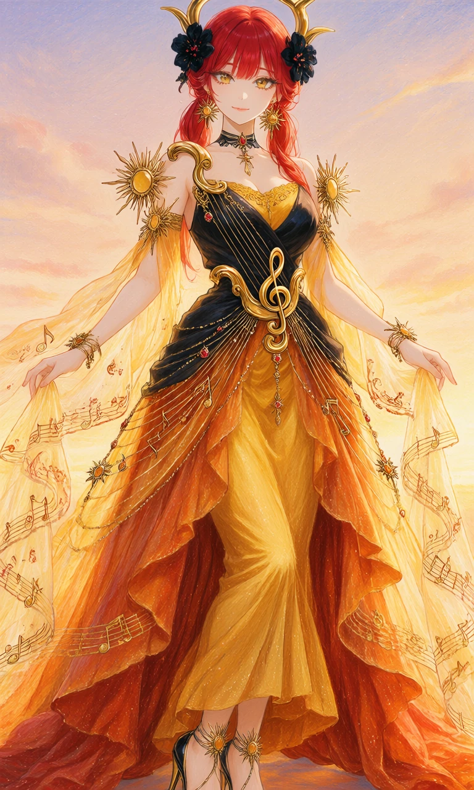
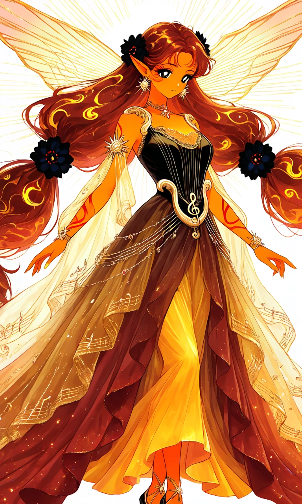

Sunburst Aria

Outfit Prompt
An exquisite, elegant sun-inspired musical fantasy gown, combining the graceful silhouette of a celestial goddess dress with the delicate curves and golden strings of a beautiful harp.
The fitted bodice is made of luxurious midnight-black satin and warm golden silk, featuring an elegant sweetheart neckline with delicate golden embroidery. The neckline is framed by sculpted antique-gold ornaments resembling the graceful curved upper frame of a classical harp, sweeping asymmetrically across the shoulders and chest.
Fine, delicate golden chains resembling harp strings descend diagonally across the bodice, secured between decorative golden frame ornaments along the neckline and waist. The chains are carefully arranged like the strings of a harp, creating a sophisticated musical design without obscuring the fitted silhouette.
The shoulders remain mostly bare, with delicate flowing golden chiffon drapes attached to small ornamental sunbursts at the upper arms. The translucent fabric falls elegantly from the arms like shimmering ribbons of sunlight, decorated with tiny golden musical notes and delicate red swirling embroidery.
A wide, beautifully sculpted antique-gold waist ornament resembles the curved lower frame of a harp, with an elegant golden treble clef at its center. Fine golden musical staff lines extend gracefully around the waist, decorated with tiny red gemstones and miniature sun-shaped charms.
The gown has a beautifully fitted waist and a dramatic, flowing floor-length skirt made of layered golden-yellow, amber-orange, and deep sunset-red silk chiffon. The skirt features a graceful asymmetrical opening at the front, revealing a fitted golden inner skirt beneath the flowing outer layers.
The outer skirt layers are long, airy, and elegantly arranged, with translucent golden chiffon panels resembling streams of sunlight. Their edges feature delicate golden embroidery resembling sun rays and curling musical staff lines, with tiny embroidered golden musical notes scattered throughout the fabric.
The lower hem gradually transitions from brilliant golden yellow into warm orange and deep crimson, resembling the beautiful colors of a glowing sunset. Tiny iridescent golden sparkles decorate the fabric, creating a soft radiant shimmer.
Elegant black-and-gold high-heeled sandals feature delicate golden straps winding around the ankles, decorated with small sunburst ornaments.
Accessories include large, elegant golden sunburst earrings, a delicate black choker with a ruby-red sun pendant, golden upper-arm cuffs shaped like curling harp frames, and beautiful golden bracelets with miniature musical-note charms.
Two beautiful black flower hair ornaments, each decorated with tiny ruby-red dots, are positioned on opposite sides of the head. The ornaments are independent of any specific hairstyle, allowing them to complement different hair lengths and arrangements.
The complete ensemble is radiant, regal, feminine, and unmistakably sun-themed.
Outfit Examples



